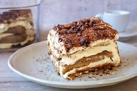

Tiramisu

Description
Tiramisu is a creamy, coffee-flavored Italian dessert that's perfect for any occasion.
This no-bake treat is loved for its light texture and rich taste, easily adaptable with different liqueurs or flavors.
Ingredients
- Mascarpone cheese
- Heavy cream
- Sugar
- Coffee (espresso)
- Ladyfinger biscuits
- Cocoa powder
- Marsala wine or coffee liqueur
- Eggs
Steps
- Whisk mascarpone with sugar and eggs.
- Whip heavy cream to soft peaks.
- Fold cream into mascarpone mixture.
- Dip ladyfingers in coffee and liqueur.
- Layer soaked biscuits and cream mixture.
- Chill for several hours and dust with cocoa powder before serving.